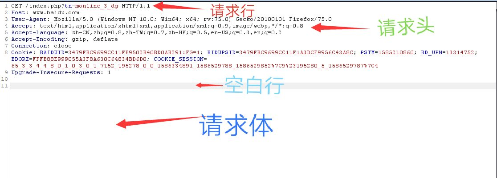
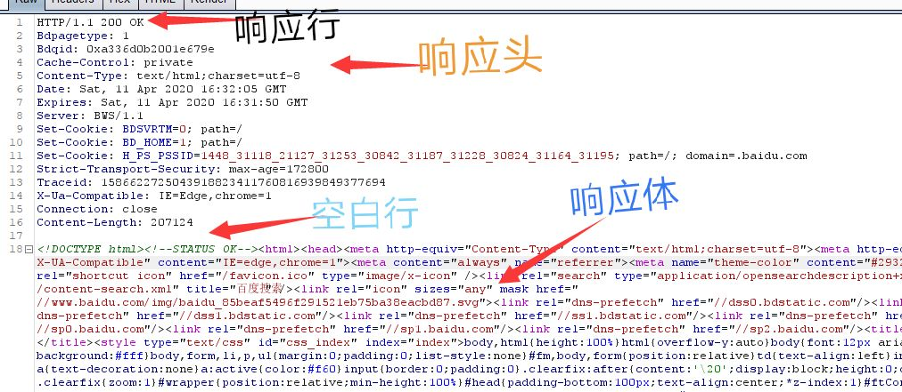

●万维网:World Wide Web是一种基于超文本和HTTP的、全球性的、动态交互的、跨平台的分布式图形信息系统。为方便浏览者在Internet上查找和浏览信息提供了图形化的、易于访问的直观界面而建立在Internet上的一种网络服务。
●因特网:是指连接计算机的网络是由于许多小的网络(子网)互联而成的一个逻辑网，每个子网中连接着若干台计算机(主机)。
●超文本:Hypertext,是一种可以显示在电脑显示器或其他电子设备的文本，超文本是用超链接的方法，将各种不同空间的文字信息组织在一起的网状文本。
●域名:Domain Name
Ip地址: 0.0.0.0 ~ 255.255.255.255是由一串用点分隔的名字组成的Internet_上某一台计算机或计算机组的名称，用于在数据传输时对计算机的定位标识
●DNS:Domain Name Server是一种组织成域层次结构的计算机和网络服务命名系统,它所提供的服务是用来将主机名和域名转换为IP地址的工作web前后端的交互和浏览器的工作流程就懒得写了，
从认识url开始
URL的全称统一资源定位符(Uniform Resource Locator),是对可以从互联网上得到的资源的位置和访问方法的一种简洁的表示，是互联网上标准资源的地址。互联网上的每个文件都有一个唯一的URL ,它包含的信息指出文件的位置以及浏览器应该怎么处理它。
url组成：
scheme: // login:password @address: port /path to resource ?query_string #fragment
scheme
Scheme就是用来指定使用的传输协议,其中最常见的就是HTTP协议。它也是互联网中应用最多的。
其它常用的协议还有:
➢file: 用于访问资源位于本地计算机上的文件。
➢ftp:用于访问FTP服务器上的资源。
➢https: 通过SSL协议的HTTP访问web服务器资源。
➢mailto:访问资源属于电子邮件地址,通过SMTP协议访问。
➢ed2k、 flashget、 thunde等 ,通过支持专用下载协议的P2P软件访问资源。
//
这是URL层级URL标记符,根据RFC 1738规定的语法,在授权信息之前,每个层级结构的URL中都会包括固定的"//"符号。
非层级结构的URL: mailto:
login:password
访问资源的身份验证。
在URL中,身份验证属于可选项,在向服务器申请资源时,在某些情况下，需要指定一个用户名和密码。如果没有身份验证字段,浏览器默认以匿名的方式访问资源。
@address:
完整的层级URL,必须有一个域名、IPv4或者IPv6地址作为请求服务器的位置。域名不区分大小写, IPv6需要括在方括号中。
port
服务器端口是URL中可选内容,在没有指定端口时,会默认去访问协议的标准端口。如http的默认端口为80.基本上浏览器支持的协议都会有关联的默认服务接口。不过默认接口可以在URL中进行修改。
/path to resource
URL的这部分被称为层级文件路径,这一结构来源自UNIX目录语义,因此保留了对/../,/./的支持。
?query_string
查询字符串是一个非必须的字段,只要负责将一系列非层级格式的任意参数传递给服务器。可同时传递多个参数,参数之间用”&”符号连接,每个参数名与值用”=”隔开。
#fragment
片段ID同样是应用的位置有别于查询字符串,他应用于客户端,片段ID值并不会回传至服务端。在实际场景下,片段ID-般用于指向页面中的某个锚点,将片段ID与与预先设置的锚点名称匹配,并滚到相应的位置。
浏览器对url解析流程
提取协议名
浏览器接收到url之后会查找第一个”:”, 找到左边的便是协议名。
去除层级标识符
字符串//应该算跟在协议名后面的,如果发现有该字符则会跳过该字符,如果没有找到便不管了，所以http:baidu.com也是可以访问的。
获取授权信息部分
紧接着会依次扫描url,以/、?、#,那个先出现为准来截取URL，如果存在认证信息 ,提取出来的再查找@符号,如果找到, @符号左边便是登录信息。
提取目标地址
第3步提取授权信息之后@符号右边便是目标地址信息。目标地址信息第一个”:”分开的就是主机名和端口号。
确认路径
在目标地址部分结尾跟着一个正斜杠 ,接下来扫描?和#直至结尾,那个先出现便以那个为准,截取出来中间部分即路径信息。
提取查询字符串
在第5步中,如果存在”?”, 便会扫描#或者至字符串结尾,中间部分便是查询字段。
提取片段ID
如果成功解析完上一条信息,它最后还跟着#号那么从这个符号到字符串的结尾便算片段ID了,片段ID是不会发送到服务器的! 一般用来跳到A标签的锚链接.
http协议简介：
关于协议
协议是指计算机通信网络中两台计算机之间进行通信所必须共同遵守的规定或规则。HTTP( HyperText Transfer Protocol )超文本传输协议,是从服务器传输超文本到本地浏览器的传输协议。
http协议工作原理
HTTP的请求/响应模式
当用户通过浏览器访问www.baidu.com时会发生以下动作:
1、浏览器连接到服务器HTTP端口(默认80端口),建立一个TCP连接。
2、浏览器请求服务器上的index.html文档。http请求报文
3、服务器给出响应,将文档index.htmI发送给浏览器。http响应报文
4、传输完成，服务器主动关闭TCP连接。
5、浏览器解析渲染html内容,呈现给用户。
HTTP连接方式
●非持久性连接
浏览器每请求一个文档,就创建一个连接 ，当文档传输完成之后立即释放连接。对于请求Web页面中包含多个其他文档对象的链接时(如视频、图片、声音等)，每个请求链接都需要创建新的连接，效率底下。建立TCP连接请求文档1…
●持久性连接
即在一个连接中,可以进行多个文档的请求和响应HTTP有一个Connection字段,该字段为Keep-alive时, TCP连接会保持一段时间，等后续所有请求接受和完成时,断开连接。连接时间可由双方商定。
####➢HTTP的无状态性
无状态是指协议对事物的处理没有记忆能力,同一个浏览器第二次打开Web应用同一个页面时,服务器并不知道客户曾经访问过。例如:在你购物车加入几件商品之后,此时需要跳转到支付界面。无状态的特性导致服务器无法知道你选购哪些商品。此时就引用了Cookie和Session机制来维持会话。
cookie
Cookie实际上是一小段的文本信息。客户端请求服务器,服务器就给客户端们颁发一个通行证,即Cookie。当浏览器再请求该网站时,浏览器把请求的网址连同该Cookie同提交给服务器。服务器检查该Cookie ,以此来辨认用户状态。
session
Session是另一种记录客户状态的机制,不同的是Cookie保存在客户端浏览器中,而Session保存在服务器上。客户端浏览器访问服务器的时候,服务器把客户端信息以某种形式记录在服务器上。这就是Session。客户端浏览器再次访问时只需要从该Session中查找该客户的状态就可以了。
http报文结构
请求报文

请求行
请求报文中的方法方法是对所请求对象进行的操作,也就是一种命令。请求报文中的方法有:
GET：请求获取一个Web页面
HEAD：与GET方法相似,区别在于只获取Web页面首部,不获取主体。
POST；主要作用是执行操作,比如向服务器提交一个表单。
PUT：请求向服务器上传指定的资源。
DELETE：请求删除一个Web页面
TRACE：用于测试,要求服务器返回收到的请求。
MOVE：请求移动某个页面到指定位置
OPTION：请求服务器所支持哪些方法。
请求头
请求消息头部字段说明:
Host：消息头用于指定出现在被访问的完整URL的主机名称。
User-Agent：这个消息头提供与浏览器或生成请求的其他客户端软件有关的信息。
Accept：这个消息头用于告诉服务器客户端愿意接受哪些内容，如图像类型、办公文档格式等。
AcceptLanguage：用于声明服务器浏览器可以支持什么语言。
Accept-Encoding：这个消息头用于告诉服务器，客户端愿意接受哪些内容编码。
Referer：这个消息头用于指示提出当前请求的原始URL。
Cookie：提交此服务器向客户端发送的其他参数(服务器使用Set-Cookie消息头来设置Cookie,一般用于身份验证)
Connection：通知通信的另一方，是否在完成HTTP传输后关闭TCP连接。
请求体
响应报文

响应行
状态码是响应报文状态行中包含的一个3位数字，指明请求是否被满足，如果没有满足，原因是什么。状态码分为以下五大类:
1xx：表示请求已接收，继续处理。（100:服务器正在处理客户请求。）
2xx：表示请求已被成功接收、理解、接受，（200 :请求成功。）
3xx：客户端被重定向到其他资源。
301 :表示本网页永久性转移到另一个地址。
302 :重定向，浏览器自动跳转新连接。
304:上次文档已经缓存，还可以继续使用。4xx：请求有语法错误或请求无法实现。
400 :请求语法有错误，服务器不能解析。
403 :拒绝提供服务。
404 :请求资源不存在。5xx：服务器执行请求时遇到错误。
500 :服务器错误。
503 :服务器当前不能处理，请稍后再试。响应头
响应头部字段说明:
Date：响应返回的时间, GMT代表格林威治时间(北京市位于东8区,计北京时间要加8小时)。
Server：这个消息头提供所使用的Web服务器软件的相关信息。
Set-Cookie：这个消息头用于向浏览器发布cookie，浏览器会在随后的请求中将其返回给服务器。
Content-Type：这个消息头用于规定消息主体的内容类型。例如, HTML文档的内容类型为text/html.
Content-Length：这个消息头用于规定消息主体的字节长度。
Connection：通知通信的另一方，是否在完成HTTP传输后关闭TCP连接。
响应体